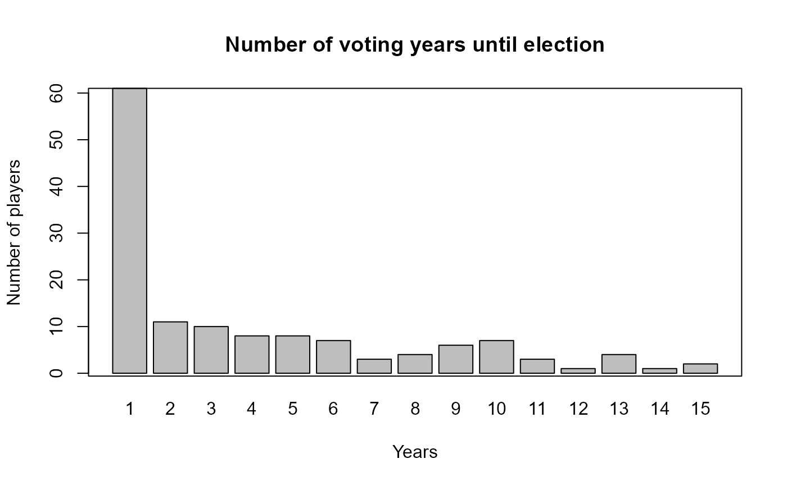
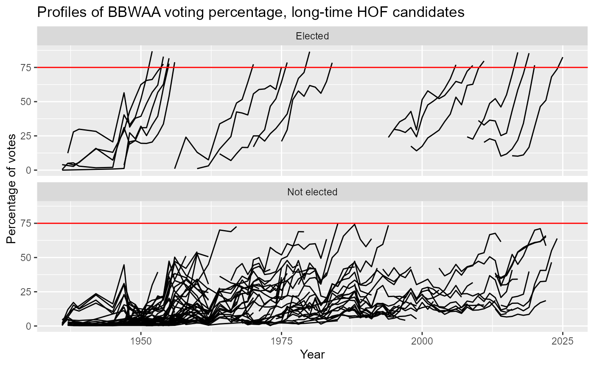

Hall of Fame Voting Data
HallOfFame.RdHall of Fame table. This is composed of the voting results for all candidates nominated for the Baseball Hall of Fame.
Usage
data(HallOfFame)Format
A data frame with 6418 observations on the following 9 variables.
playerIDPlayer ID code
yearIDYear of ballot
votedByMethod by which player was voted upon. See Details
ballotsTotal ballots cast in that year
neededNumber of votes needed for selection in that year
votesTotal votes received
inductedWhether player was inducted by that vote or not (Y or N)
categoryCategory of candidate; a factor with levels
ManagerPioneer/ExecutivePlayerUmpireneeded_noteExplanation of qualifiers for special elections
Details
This table links to the People table via the playerID.
votedBy: Most Hall of Fame inductees have been elected by the
Baseball Writers Association of America (BBWAA). Rules for election are
described in https://en.wikipedia.org/wiki/National_Baseball_Hall_of_Fame_and_Museum#Selection_process.
Source
Lahman, S. (2025) Lahman's Baseball Database, 1871-2024, 2025 version, https://sabr.org/lahman-database/
Examples
## Some examples for Hall of Fame induction data
require("dplyr")
require("ggplot2")
############################################################
## Some simple queries
# What are the different types of HOF voters?
table(HallOfFame$votedBy)
#>
#> BBWAA Centennial
#> 3960 6
#> Classic Baseball Era Contemporary Baseball Era Non-Players
#> 8 8
#> Contemporary Era Final Ballot
#> 8 21
#> Negro League Nominating Vote
#> 48 76
#> Old Timers Run Off
#> 30 81
#> Special Election Veterans
#> 2 1255
#> Veterans - 1943 and Later Veterans - Contributors
#> 21 120
#> Veterans - Early Baseball Era Veterans - Executives
#> 10 20
#> Veterans - Expansion Era Veterans - Golden Age Era
#> 24 10
#> Veterans - Golden Era Veterans - Managers and Umpires
#> 20 20
#> Veterans - Modern Baseball Era Veterans - Players
#> 20 600
#> Veterans - Pre-1943 Veterans - Pre-Integration Era
#> 10 20
#> Veterans - Today's Game Era
#> 20
# What was the first year of Hall of Fame elections?
sort(unique(HallOfFame$yearID))[1]
#> [1] 1936
# Who comprised the original class?
subset(HallOfFame, yearID == 1936 & inducted == "Y")
#> playerID yearID votedBy ballots needed votes inducted category
#> 881 cobbty01 1936 BBWAA 226 170 222 Y Player
#> 2762 johnswa01 1936 BBWAA 226 170 189 Y Player
#> 3614 mathech01 1936 BBWAA 226 170 205 Y Player
#> 5013 ruthba01 1936 BBWAA 226 170 215 Y Player
#> 5922 wagneho01 1936 BBWAA 226 170 215 Y Player
#> needed_note
#> 881 <NA>
#> 2762 <NA>
#> 3614 <NA>
#> 5013 <NA>
#> 5922 <NA>
# Result of a player's last year on the BBWAA ballot
# Restrict to players voted by BBWAA:
HOFplayers <- subset(HallOfFame,
votedBy == "BBWAA" & category == "Player")
# Number of years as HOF candidate, last pct vote, etc.
# for a given player
playerOutcomes <- HallOfFame %>%
filter(votedBy == "BBWAA" & category == "Player") %>%
group_by(playerID) %>%
mutate(nyears = length(ballots)) %>%
arrange(yearID) %>%
do(tail(., 1)) %>%
mutate(lastPct = 100 * round(votes/ballots, 3)) %>%
select(playerID, nyears, inducted, lastPct, yearID) %>%
rename(lastYear = yearID)
############################################################
# How many voting years until election?
inducted <- subset(playerOutcomes, inducted == "Y")
table(inducted$nyears)
#>
#> 1 2 3 4 5 6 7 8 9 10 11 12 13 14 15
#> 61 11 10 8 8 7 3 4 6 7 3 1 4 1 2
# Bar chart of years to induction for inductees
barplot(table(inducted$nyears),
main="Number of voting years until election",
ylab="Number of players", xlab="Years")
box()

# What is the form of this distribution?
require("vcd")
#> Loading required package: vcd
#> Loading required package: grid
goodfit(inducted$nyears)
#>
#> Observed and fitted values for poisson distribution
#> with parameters estimated by `ML'
#>
#> count observed fitted pearson residual
#> 0 0 2.472678422 -1.57247525
#> 1 61 9.908895148 16.23052911
#> 2 11 19.854220057 -1.98711909
#> 3 10 26.520955713 -3.20804596
#> 4 8 26.569707470 -3.60256376
#> 5 8 21.294839075 -2.88101755
#> 6 7 14.222656000 -1.91516668
#> 7 3 8.142171765 -1.80208989
#> 8 4 4.078569496 -0.03890452
#> 9 6 1.816029718 3.10475343
#> 10 7 0.727747203 7.35247034
#> 11 3 0.265121809 5.31147646
#> 12 1 0.088536388 3.06322173
#> 13 4 0.027292043 24.04742720
#> 14 1 0.007812061 11.22564084
#> 15 2 0.002087046 37.96421005
plot(goodfit(inducted$nyears), xlab="Number of years",
main="Poissonness plot of number of years voting until election")
Ord_plot(table(inducted$nyears), xlab="Number of years")
# First ballot inductees sorted by vote percentage:
playerOutcomes %>%
filter(nyears == 1L & inducted == "Y") %>%
arrange(desc(lastPct))
#> # A tibble: 61 × 5
#> # Groups: playerID [61]
#> playerID nyears inducted lastPct lastYear
#> <chr> <int> <fct> <dbl> <int>
#> 1 riverma01 1 Y 100 2019
#> 2 jeterde01 1 Y 99.7 2020
#> 3 suzukic01 1 Y 99.7 2025
#> 4 griffke02 1 Y 99.3 2016
#> 5 ryanno01 1 Y 98.8 1999
#> 6 seaveto01 1 Y 98.8 1992
#> 7 ripkeca01 1 Y 98.5 2007
#> 8 brettge01 1 Y 98.2 1999
#> 9 cobbty01 1 Y 98.2 1936
#> 10 aaronha01 1 Y 97.8 1982
#> # ℹ 51 more rows
# Who took at least ten years on the ballot before induction?
playerOutcomes %>%
filter(nyears >= 10L & inducted == "Y")
#> # A tibble: 18 × 5
#> # Groups: playerID [18]
#> playerID nyears inducted lastPct lastYear
#> <chr> <int> <fct> <dbl> <int>
#> 1 blylebe01 14 Y 79.7 2011
#> 2 boudrlo01 10 Y 77.3 1970
#> 3 cronijo01 10 Y 78.8 1956
#> 4 drysddo01 10 Y 78.4 1984
#> 5 hartnga01 11 Y 77.7 1955
#> 6 heilmha01 11 Y 86.8 1952
#> 7 kinerra01 13 Y 75.4 1975
#> 8 lemonbo01 12 Y 78.6 1976
#> 9 maranra01 13 Y 82.9 1954
#> 10 martied01 10 Y 85.4 2019
#> 11 raineti01 10 Y 86 2017
#> 12 riceji01 15 Y 76.4 2009
#> 13 snidedu01 11 Y 86.5 1980
#> 14 suttebr01 13 Y 76.9 2006
#> 15 terrybi01 13 Y 77.4 1954
#> 16 vanceda01 15 Y 81.7 1955
#> 17 wagnebi02 10 Y 82.5 2025
#> 18 walkela01 10 Y 76.6 2020
############################################################
## Plots of voting percentages over time for the borderline
## HOF candidates, according to the BBWAA:
# Identify players on the BBWAA ballot for at least 10 years
# Returns a character vector of playerIDs
longTimers <- as.character(unlist(subset(playerOutcomes,
nyears >= 10, select = "playerID")))
# Extract their information from the HallOfFame data
HOFlt <- HallOfFame %>%
filter(playerID %in% longTimers & votedBy == "BBWAA") %>%
group_by(playerID) %>%
mutate(elected = ifelse(any(inducted == "Y"),
"Elected", "Not elected"),
pct = 100 * round(votes/ballots, 3))
# Plot the voting profiles:
ggplot(HOFlt, aes(x = yearID, y = pct,
group = playerID)) +
ggtitle("Profiles of BBWAA voting percentage, long-time HOF candidates") +
geom_line() +
geom_hline(yintercept = 75, colour = 'red') +
labs(x = "Year", y = "Percentage of votes") +
facet_wrap(~ elected, ncol = 1)

## Eventual inductees tend to have increasing support over time.
## Fit simple linear regression models to each player's voting
## percentage profile and extract the slopes. Then compare the
## distributions of the slopes in each group.
# data frame for playerID and induction status among
# long term candidates
HOFstatus <- HOFlt %>%
group_by(playerID) %>%
select(playerID, elected, inducted) %>%
do(tail(., 1))
# data frame of regression slopes, which represent average
# increase in percentage support by BBWAA members over a
# player's candidacy.
HOFslope <- HOFlt %>%
group_by(playerID) %>%
do(mod = lm(pct ~ yearID, data = .)) %>%
do(data.frame(slope = coef(.$mod)[2]))
## Boxplots of regression slopes by induction group
ggplot(data.frame(HOFstatus, HOFslope),
aes(x = elected, y = slope)) +
geom_boxplot(width = 0.5) +
geom_point(position = position_jitter(width = 0.2))
# Note 1: Only two players whose maximum voting percentage
# was over 60% were not eventually inducted
# into the HOF: Gil Hodges and Jack Morris.
# Red Ruffing was elected in a 1967 runoff election while
# the others have been voted in by the Veterans Committee.
# Note 2: Of the players whose slope was >= 2.5 among
# non-inductees, only Jack Morris has not (yet) been
# subsequently inducted into the HOF; however, his last year of
# eligibility was 2014 so he could be inducted by a future
# Veterans Committee.